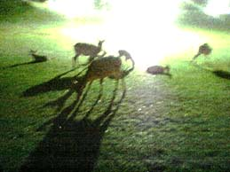

|
■2003/08/07/(Thu)22:40
なら燈花会
|

大阪での仕事終了後、なら燈花会に駆けつけました。
奈良公園に燈るローソクの幻燈の夕べでふ。
初めて見た「なら燈花会」は、暗闇にぽつりぽつりと置かれた灯火が
未知との遭遇奈良特別編とゆーよーな情景を醸し出してました。
このままＵＦＯが遊びに来てもなーんら不思議でもないよーな
それが当たり前のよーな不思議な催し。
雨でだいぶローソクが消えてしまってましたが、マー満足。
帰り近鉄奈良駅で先発、後発車両が同じホームに止まっていて、どちらとも
同じくらい人が乗っている…
「どちらが先発なのかちらん？」と悩んでいたら
「あー先発はあっちでーす。この車両は後発でーす」と駅員さん。
一斉に後発車両に乗っていた人たちが先発車両に…
なんかこーゆー愛らしさは奈良らしいなーと思ったのだけれども、ワタシの偏見かちらん？
ちなみに写真は鹿の親子。
カメラを忘れたので、ケータイで撮影。
燈花会の写真はのちのちアップいたしまふ。
|
| |